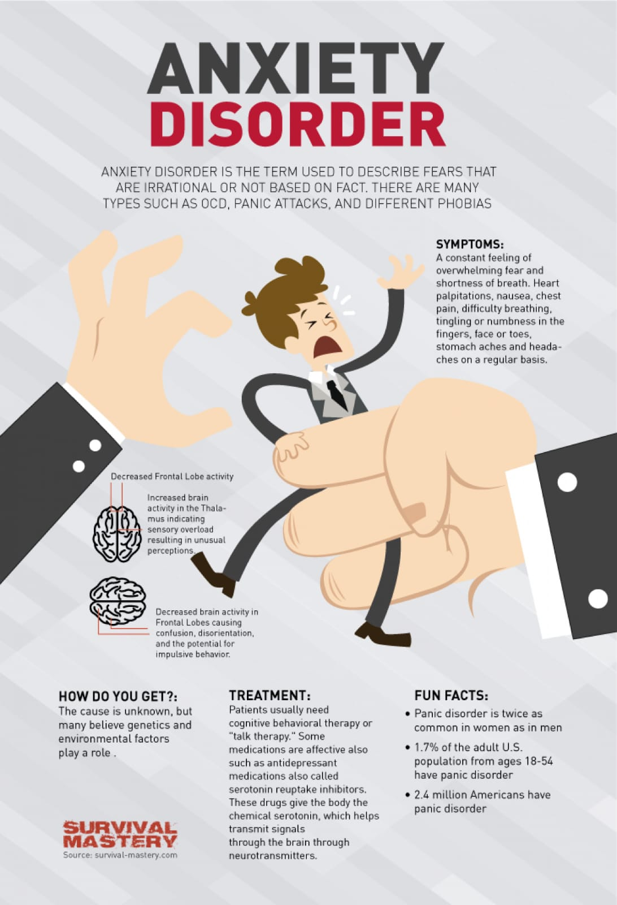
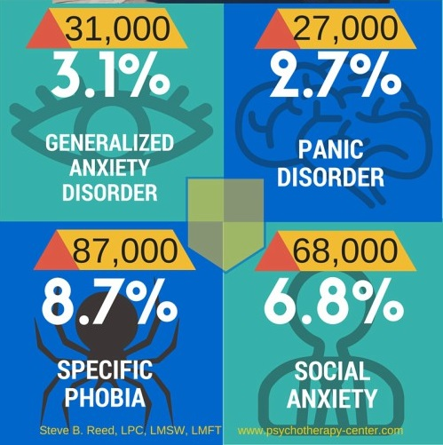
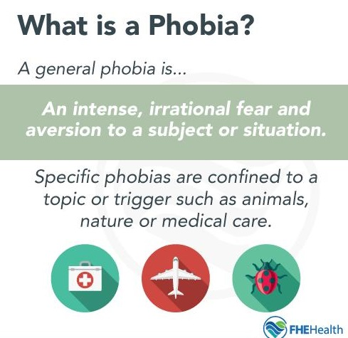
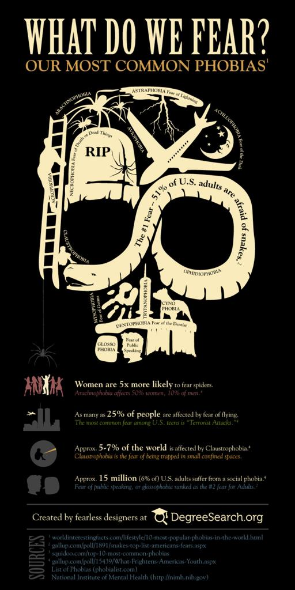
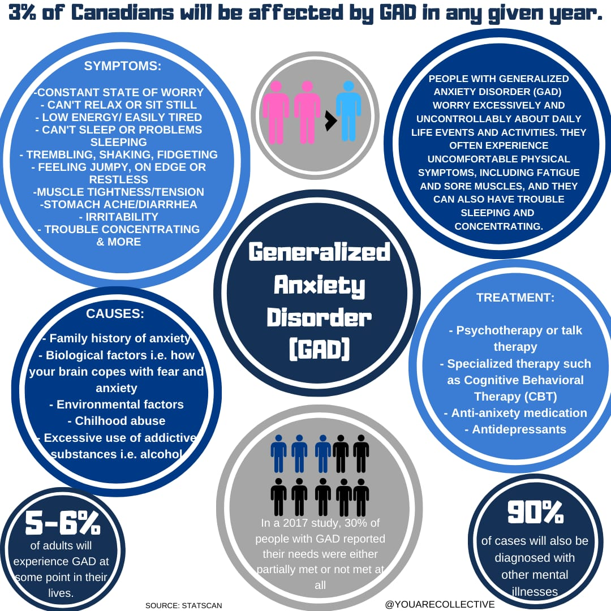

Anxiety Disorders
Feeling anxious is a common emotion. Some anxiety is normal when faced with stressful events. However, when anxiety becomes persistent, overwhelming, and irrational, it may interfere with daily activities like performance at work and relationships. When anxiety becomes excessive, one may develop an anxiety disorder.
There are different types of anxiety disorders, including:
General symptoms of anxiety disorder include:

OCD
- It causes you to obsessively repeat constant sensations or thoughts or the urge to do something over and over again
- It is compulsion &/or obsessions like thoughts, urges or mental images causing anxiety. However, not all habits are obsessions.
- A person with ocd generally cannot control their thoughts/behaviours that are recognised to be excessive
- Some individuals with ocd also have a tic disorder ( sudden , brief, repetitive movements )
Symptoms
- Fear of being contaminated by touching objects others have touched
- Doubts that you've locked the door or turned off the stove
- Intense stress when objects aren't orderly or facing a certain way
- Images of driving your car into a crowd of people
- Thoughts about shouting obscenities or acting inappropriately in public
- Unpleasant sexual images
- Avoidance of situations that can trigger obsessions, such as shaking hands
How it affects their life
- People may spend the day carrying out compulsions which would cause them to be unable to leave the house
- Some other people with OCD may also carry out their compulsions in secret or avoid social situations so they can carry out their compulsions fully
Panic Disorder
A panic attack is a sudden episode of intense fear that triggers severe physical reactions when there is no real danger or apparent cause. When panic attacks occur, you might think you're losing control, having a heart attack or even dying.
Many people have just one or two panic attacks in their lifetimes, and the problem goes away, perhaps when a stressful situation ends. But if you've had recurrent, unexpected panic attacks and spent long periods in constant fear of another attack, you may have a condition called panic disorder.
Panic disorder is characterized by persistent fear of having another panic attack after you have experienced at least one month (or more) of persistent concern or worry about additional panic attacks (or their consequences) recurring. You may be having a panic attack when you feel the sudden, overwhelming terror that has no obvious cause.
Although panic attacks themselves aren't life-threatening, they can be frightening and significantly affect your quality of life. Even though the symptoms of this disorder can be quite overwhelming and frightening, they can be managed and improved with treatment. Seeking treatment is the most important part of reducing symptoms and improving your quality of life.
Causes
The causes of panic disorder are not clearly understood. Research has shown that panic disorder may be genetically linked. Panic disorder is also associated with significant transitions that occur in life.
Who is at risk for developing a panic disorder?
Information about the disease does indicate that certain groups are more likely to develop the disorder. In particular, women are twice as likely as men to develop the condition, according to the National Institute of Mental Health.
Prevention
It may not be possible to prevent panic disorder. However, you can work to reduce your symptoms by avoiding alcohol and stimulants such as caffeine as well as illicit drugs. It is also helpful to notice if you are experiencing symptoms of anxiety following a distressing life event. If you are bothered by something that you experienced or were exposed to, discuss the situation with your primary care provider.
Symptoms

In general, panic disorder is characterized by recurring, unexpected panic attacks.
They often happen without warning and result in physical symptoms like chest pain, shortness of breath, sweating, shaking, and dizziness. They also may involve feeling dissociated from reality or having a sense of impending doom.
Normally, an attack lasts less than 20 minutes.
Phobia
Specific phobias are overwhelming and unreasonable fear of objects // situations that pose little real danger but provoke anxiety and avoidance. Social phobias, also known as social anxiety disorder, is the most common specific phobia. Specific phobias are long-lasting and cause intense physical and psychological reactions. This can affect one’s daily life in terms of their ability to function normally at work, school or social settings.
Categories of specific phobias ( fear of~ )
- Animal ( zoophobia ):
- Specific situations: Aviophobia ( flying ), Agoraphobia ( in a situation where escape is difficult), Claustrophobia ( confined // crowded spaces, eg. elevators )
- Natural environment:
- Blood-injection-injury:
- Other phobias:
Arachnophobia ( spiders ), Ophidiophobia ( snakes ), Cynophobia ( dogs )
Astraphobia ( thunder + lightning ), Hydrophobia ( water )
Hemophobia ( blood ), Trypanophobia( medical procedures; injections, operations )
Acrophobia ( heights ), Glossophobia ( public speaking ), Coulrophobia ( clowns )

Symptoms ( when exposed to these phobias )
- Immediate feeling of anxiety, fear and panic
- Awareness that your fears are unreasonable/ exaggerated but feeling powerless to control them
- Anxiety worsens as the object/ situation worsens
- Constantly avoiding the object/ situation or enduring it with intense anxiety
- Physical reactions: sweating, dizziness, rapid heartbeat, difficulty breathing, feeling nauseous, fainting
Causes
- Negative experience, trauma
- Genetics and environment — this could be due to genetics or learned behavior.
- Brain function — changes may play a role in developing phobias
How it affects their life
- Social isolation
- At risk of academic and relationship problems.
- Trouble with social skills
- Mood disorders may have depression and other anxiety disorders
- Substance abuse ( addiction to drugs, alcohol )
- Su*c*de :(
Prevention
Seek psychological help ! Treat yourself with psychotherapy (exposure therapy) and anxiety-reducing medication.
Social Anxiety

Social anxiety disorder is a type of anxiety disorder that causes extreme fear in social settings. People with this disorder have trouble talking to people, meeting new people, and attending social gatherings. They fear being judged or scrutinized by others. They may understand that their fears are irrational or unreasonable, but feel powerless to overcome them.
Some people with the disorder do not have anxiety in social situations but have performance anxiety instead.
Symptoms of Social Anxiety
When having to perform in front of or be around others, people with social anxiety disorder tend to:

Psychological symptoms may include:
- worrying intensely about social situations
- worrying for days or weeks before an event
- avoiding social situations or trying to blend into the background if you must attend
- worrying about embarrassing yourself in a social situation
- worrying that other people will notice you are stressed or nervous
- missing school or work because of anxiety
Causes
The exact cause of the social phobia is unknown. However, current research supports the idea that it is caused by a combination of environmental factors and genetics. Negative experiences may also contribute to the disorder, which includes:
- bullying
- family conflict
- sexual abuse
If you have a family member with social phobia, you’re more at risk of having it, too.
Generalised Anxiety Disorder ( GAD )
GAD is different from normal feelings of anxiousness. It’s common to feel anxious about the things happening in your life — such as your upcoming exams— every once in a while. A person who has GAD may worry uncontrollably about their studies several times per day for months on end. This can happen even when there isn’t a reason to worry. The person is often aware that there is no reason for them to worry.
Sometimes people with this condition just worry, but they are unable to say what they are worried about. They report feelings that something bad may happen or may report that they can’t calm themselves.
This excessive, unrealistic worry can be frightening and can interfere with relationships and daily activities.Generalized Anxiety Disorder (GAD) is characterized by persistent and excessive worry about a number of different things. People with GAD may anticipate disaster and may be overly concerned about money, health, family, work, or other issues.
Causes and risk factors
- a family history of anxiety
- recent or prolonged exposure to stressful situations, including personal or family illnesses
- excessive use of caffeine or tobacco, which can make existing anxiety worse
- childhood abuse
- According to the Mayo Clinic, women are twice as likely as men to experience GAD.
How it affects their life
Most people can manage GAD with a combination of therapy, medication, and lifestyle changes. Talk to your doctor if you’re concerned about how much you worry. They can refer you to a mental health specialist.
Symptoms